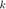
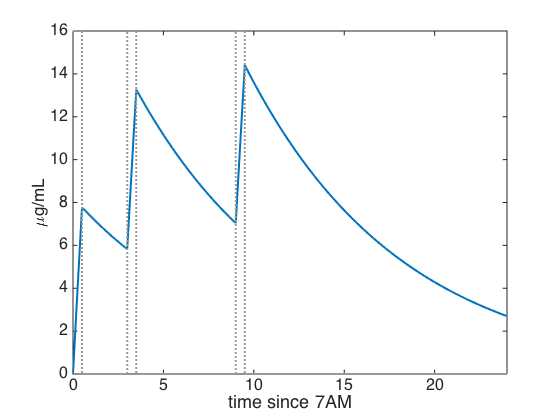

First-order pharmacokinetics models the elimination of a drug from the blood plasma with the exponential decay ODE, , for a positive rate constant . The rate is often expressed as a half-life , defined by  .
.
Experimental evidence shows that a 300 mg oral dose of caffeine, such as might be found in a large mug of brewed coffee, creates a concentration of about 8 $\mu$g/mL in blood plasma, followed by first-order kinetics with a half-life of about 6 hours (although this rate can vary a great deal from person to person) [cite Newton et al., 1981]. This implies the ODE
k = log(2)/6; L = chebop( @(t,c) diff(c) + k*c, [0,24] );
We will model the effect of ingesting 300 mg of caffeine as a constant rate of increase in concentration starting at a given and lasting 30 minutes.
t = chebfun('t',[0,24]);
coffee = @(t0) 16*(t>t0).*(t<t0+0.5);
Starting from a bloodstream free of caffeine, suppose coffee is consumed at 7:00, 10:00, and 16:00. We will start measuring time from the first cup.
intake = coffee(0) + coffee(3) + coffee(9); L.lbc = 0;
Here is the resulting level of caffeine in blood plasma.
c = L\intake; plot(c) hold on, plot(intake,'color',.6*[1 1 1]) xlabel('time since 7AM'), ylabel('{\mu}g/mL')
As you can see, a full 24 hours does not leave enough time to completely clear the caffeine from the bloodstream.